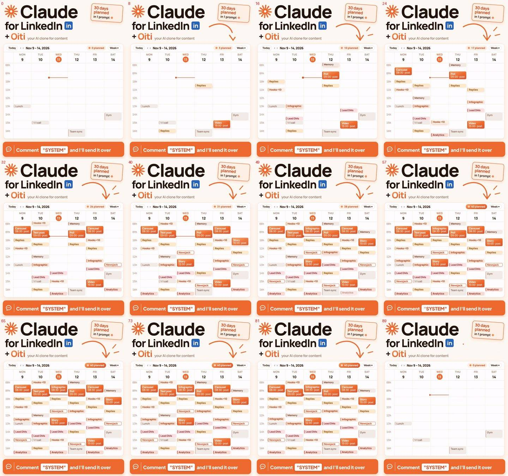
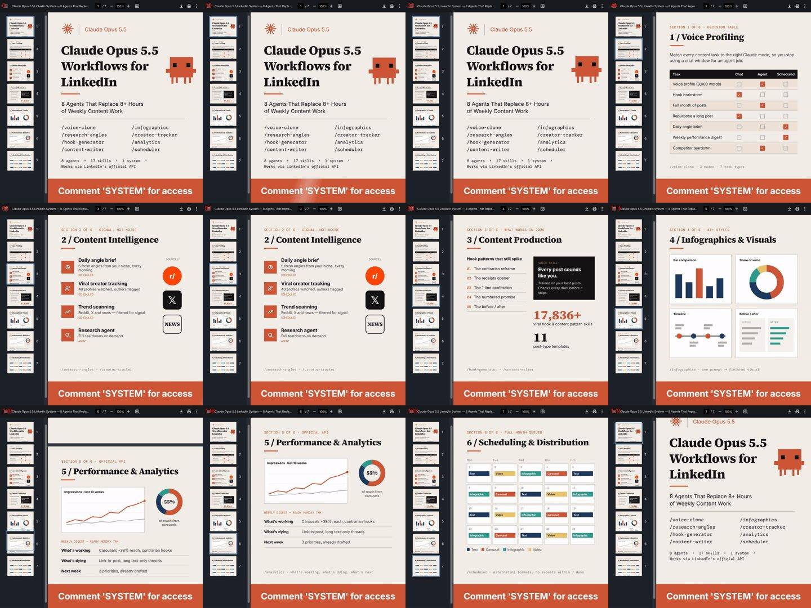
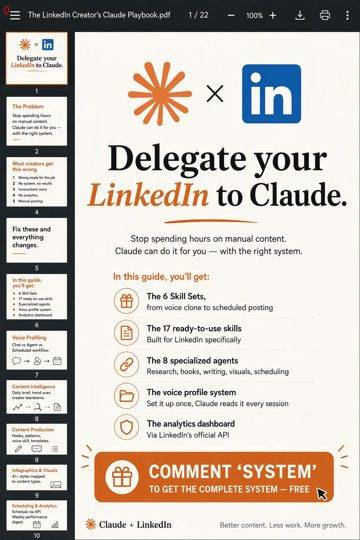
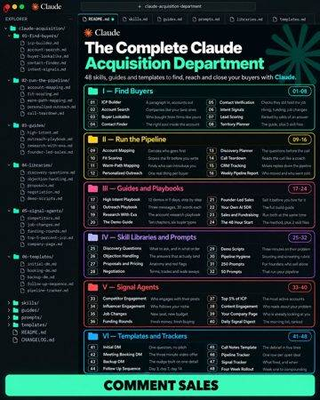

C1Carousel, 9 pagesCTA: Webinar (10 Dec)
6 steps from senior executive to a fintech board seat.
We teach all 6 on 10 December ↓
- Teaches
- The six-step roadmap to a fintech board seat, one page per step
- Asset
- Flow-matrix carousel: each page a numbered pill leading to a row of outlined cards joined by a connector; black ground, orange numerals, teal info line (R19 look)
- Sample
- HD11 · Harry Dry · Educational Carousel · Step-by-step framework deck · original post
- Facts
- CO-020, CO-021, CO-022, CO-023, CO-024, CO-025, CO-002
C2Carousel, 8 pagesCTA: Webinar (10 Dec)
Executives manage. Boards govern.
6 places where the line moves ↓
- Teaches
- Management versus governance: eight before and after pairs a new NED meets
- Asset
- Strict two-row comparison: every page splits 'As an executive' above and 'On the board' below, huge whitespace; warm white, ink, one orange rule
- Sample
- HD21 · Harry Dry · Educational Carousel · Comparison slide deck · original post
- Facts
- CO-020, WS-006, WS-022, WS-005, WS-003
C3Carousel, 9 pagesCTA: Board Programme
Audit and risk. Remuneration. Nomination.
What each board committee is for ↓
- Teaches
- Board committees and the senior independent director, explained
- Asset
- Case-file carousel: dotted ribbon header, a tilted committee label, body text and one proof chip per page; slate and paper
- Sample
- PC42 · Patrick James Cumming · Educational Carousel · Case-study carousel · original post
- Facts
- WS-023, WS-030, WS-004
C4Carousel, 8 pagesCTA: Board Programme
Your first board seat is probably not a listed company.
Where a senior banker should start ↓
- Teaches
- The first board role for a senior banker: where, how long, how to use the first six months
- Asset
- Left text, right object: each page pairs a short statement with one drawn object (a map pin, a calendar, a contact card); black and teal
- Sample
- HD31 · Harry Dry · Educational Carousel · Product-walkthrough carousel · original post
- Facts
- WS-002, WS-021, WS-001
C5Carousel, 8 pagesCTA: Board Programme
3 months. 11 January to 9 April 2027.
The CISI Board Readiness Programme, powered by FINTECH Circle ↓
- Teaches
- Announcement: the CISI Board Readiness Programme, who it is for and what it covers
- Asset
- Varied-page deck: hero cover, a dates page, a who-it-is-for page, a contents page; navy and orange. Needs facts rows on CISI programme content before build
- Sample
- HD45 · Harry Dry · Educational Carousel · Step-by-step framework deck · original post
- Facts
- CO-014 (more rows needed)
C6Carousel, 9 pagesCTA: Board Programme
A board meeting you can rehearse before you sit on a board.
How our Pop-Up Boards work ↓
- Teaches
- Pop-Up Boards: read the papers, prepare questions, meet the leadership team, follow up
- Asset
- Dark numbered carousel: logo top, a large numeral and headline per page, one highlighted line per step; black, white, orange
- Sample
- AB27 · Austin Belcak · Educational Carousel · Step-by-step framework deck · original post
- Facts
- WS-020, CO-015
A1Animated image (GIF and MP4)CTA: Webinar (10 Dec)
Advisor. NED. Committee chair. Chair.
The 4 steps of a portfolio career ↓
- Teaches
- The portfolio career path and how duties change at each step
- Asset
- Animated org-chart tree that grows level by level, annotation tabs naming each role's duty and liability; ink on paper, teal connectors
- Sample
- AV15 · Alex Vacca · Framework Infographic · Animated Org / system chart · original post
- Facts
- WS-004, WS-003, WS-005
A2Animated image (GIF and MP4)CTA: Board Programme
Noses in, fingers out.
Where a board's job on AI starts and stops ↓
- Teaches
- AI governance: what the board sets, approves and demands, and what it leaves to management
- Asset
- Animated 2x2 matrix: the four quadrants fill in turn (set intent, approve guard rails, demand visibility, leave to management); graphite and amber
- Sample
- AV25 · Alex Vacca · Framework Infographic · Animated Framework diagram · original post
- Facts
- WS-006, WS-007, WS-028
A3Animated image (GIF and MP4)CTA: Board Programme
"Agents don't fix broken processes. They automate them."
The order of AI adoption a board should expect ↓
- Teaches
- The four-step hierarchy of generative AI implementation
- Asset
- Animated tier stack: a left rail pyramid builds step by step while the matching tier card on the right lights up; forest and cream
- Sample
- AV23 · Alex Vacca · Framework Infographic · Animated Framework diagram · original post
- Facts
- WS-024, WS-029, WS-009
A4Animated image (GIF and MP4)CTA: Webinar (10 Dec)
10 December, 12:00 London.
Our next Board Webinar ↓
- Teaches
- Event promotion for the 10 December Board Webinar
- Asset
- Animated calendar: the month fills day by day and stops on 10 December, the session title types in; R19 black, orange and teal
- Sample
- BK02 · Bharath Krishna Pai · Promo Graphic · Animated calendar fill · original post
- Facts
- webinars.json 10 Dec (title to confirm), CO-018, CO-019

S1ImageCTA: Board Programme
Fractional CXO, board advisor, NED, chair.
4 roles that look alike and carry very different duties ↓
- Teaches
- The four roles compared: authority, liability, fiduciary duty, regulator
- Asset
- True data table: frozen 'Factor' column, four role columns, ticks and short cells; white, ink, one orange highlight row
- Sample
- AV20 · Alex Vacca · Framework Infographic · Comparison graphic · original post
- Facts
- WS-003, WS-005
S2ImageCTA: Webinar (10 Dec)
4 questions every NED should be asking about AI ↓
- Teaches
- The four board questions on AI from the Board Programme AI module
- Asset
- Tall numbered list with highlight boxes for scan rhythm, re-cut to 4:5; black ground, white type, orange boxes (R19)
- Sample
- AB44 · Austin Belcak · Framework Infographic · List infographic · original post
- Facts
- WS-008, WS-028
S3ImageCTA: Board Programme
VC-backed, PE-backed, listed.
The same board seat, three different jobs ↓
- Teaches
- How the board's job differs by ownership type
- Asset
- Modular card grid: three panels of unequal height, each with an icon, the board type and four lines; stone and petrol
- Sample
- HD42 · Harry Dry · Framework Infographic · Framework diagram · original post
- Facts
- WS-019
S4ImageCTA: Webinar (10 Dec)
4 reasons strong executives never get a board seat ↓
- Teaches
- The four blockers, and the NED CV difference
- Asset
- Designed editorial single: headline and numbered list on the left, a mock NED CV page on the right with the four gaps annotated; paper and ink
- Sample
- AB01 · Austin Belcak · Illustrated Concept · Metaphor illustration · original post
- Facts
- WS-001, CO-026, WS-021
S5ImageCTA: Webinar (10 Dec)
Consumer or business. Balance sheet or capital light.
The fintech map every board candidate should carry ↓
- Teaches
- The fintech map as a 2x2, with the infrastructure layer underneath
- Asset
- True 2x2 quadrant matrix with labelled axes and sub-sectors placed in each quadrant, an infrastructure band along the base; ink, sage, one orange node
- Sample
- AV35 · Alex Vacca · Framework Infographic · Comparison graphic · original post
- Facts
- WS-025, WS-010
S6ImageCTA: Board Programme
The chair runs the board. The CEO runs the company.
Who owns what ↓
- Teaches
- Chair versus CEO: responsibilities side by side
- Asset
- Masonry grid of unequal cards, each with a CHAIR or CEO band and one responsibility; charcoal and brass
- Sample
- AV28 · Alex Vacca · Framework Infographic · Framework diagram · original post
- Facts
- WS-022
S7ImageCTA: Webinar (10 Dec)
Our next Board Webinar is on 10 December at 12:00 London.
For senior leaders with 15 to 30+ years in financial services ↓
- Teaches
- Event announcement: date, time, who it is for, the six steps
- Asset
- Webinar hero in FINTECH Circle's own creative: black ground, orange kicker top left, white logo top right, large white headline, teal date line, orange URL kicker in the footer (R19 exactly)
- Sample
- AB14 · Austin Belcak · Promo Graphic · Event / webinar graphic · original post
- Facts
- webinars.json 10 Dec (title to confirm), CO-018, CO-019, CO-020 to CO-025
G1Giveaway: animated PDF flip-through (GIF and MP4) plus the resourceCTA: Webinar (10 Dec)
8 fintech sub-sectors. 8 board checklists.
What a director watches in each, in one free guide ↓
- Teaches
- Resource giveaway: The Fintech Board Checklist, the risks and metrics a board watches in paytech, lending, embedded finance, digital assets, wealthtech, regtech, insurtech and capital markets
- Asset
- Post: an animated PDF viewer (toolbar, thumbnail rail, pages turning) showing the real guide. Resource: an 8 to 10 page board-pack style guide built only from the Module 3 checklists and metrics
- Sample
- ID11 · Ipsita Dhar · Promo Graphic · Animated PDF lead-magnet flip-through · original post
- Facts
- WS-011, WS-027, WS-012, WS-010

G2Giveaway: image plus the resourceCTA: Board Programme
Before you say yes to a board seat, check 6 things.
Our due-diligence checklist, free ↓
- Teaches
- Resource giveaway: The Board Seat Due-Diligence Checklist (SMCR exposure, the other directors, founders, financials, products, reputation, D&O cover, board type)
- Asset
- Post: a PDF lead-magnet viewer mockup with page count and visible thumbnails. Resource: a 4 to 6 page checklist
- Sample
- NJ08 · Nelbin Joseph · Promo Graphic · PDF lead-magnet viewer mockup · original post
- Facts
- WS-016, WS-019, WS-003, WS-005

G3Giveaway: image plus the resourceCTA: Board Programme
Our AI governance board pack, free.
The policy, the 4 questions and the implementation order ↓
- Teaches
- Resource giveaway: an AI governance starter pack for boards (usage policy outline, four NED questions, noses in fingers out, the four-step hierarchy)
- Asset
- Post: a file-tree resource index re-themed as a board-pack folder, each file one section of the pack. Resource: a 6 page pack
- Sample
- BK10 · Bharath Krishna Pai · Promo Graphic · IDE file-tree resource index · original post
- Facts
- WS-006, WS-007, WS-008, WS-024, WS-029
